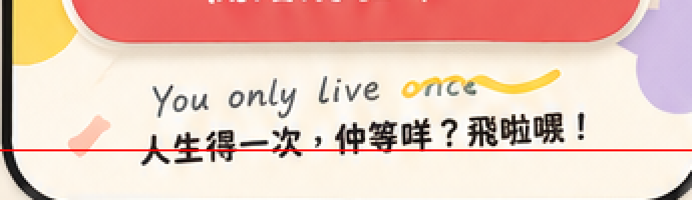

Production remains blocked. These are source previews, not Live UI or a visual PASS. The approved source pixels have not been redrawn, sharpened or upscaled into production assets.
At 390px, the proposal requires an artboard height of 804.87px rather than the locked 788.4px. Other source pixels remain at the same coordinates. Production geometry has not changed.
The red line is original master row 735. This detail uses nearest-neighbour 3× magnification for QA.

The sheet is 1122×1402, but the raw hero region below is only 360×380 and includes adjacent marks. The production frame requires at least 459×489 native pixels at 430px. It has no approved alpha extraction. Resizing a smaller crop to a larger file does not create native Retina detail.
Sources: provenance and hashes · native-resolution audit · Reference / Live / 50% Overlay · source recovery report.